All 21 pastries. Cinnamon snaps are now a proper pile (five or six cookies) shot from the same front 3/4
angle as everything else, instead of a single cookie from directly above. Raw, unedited output straight from
Gemini — nothing has been cropped, keyed, or wired into the game yet. Backgrounds are a solid near-black
(#000001) so they're easy to review; that flat color (or white, on the one remaining flagged image) gets
keyed out programmatically once you approve an image. Write feedback under each one (approve / redo / tweak).
Feedback autosaves to this browser as you type (survives reload) and nothing moves to assets/
until you sign off per image. Click Clear all feedback to wipe old notes and start fresh, or
Export feedback (JSON) when you're done.
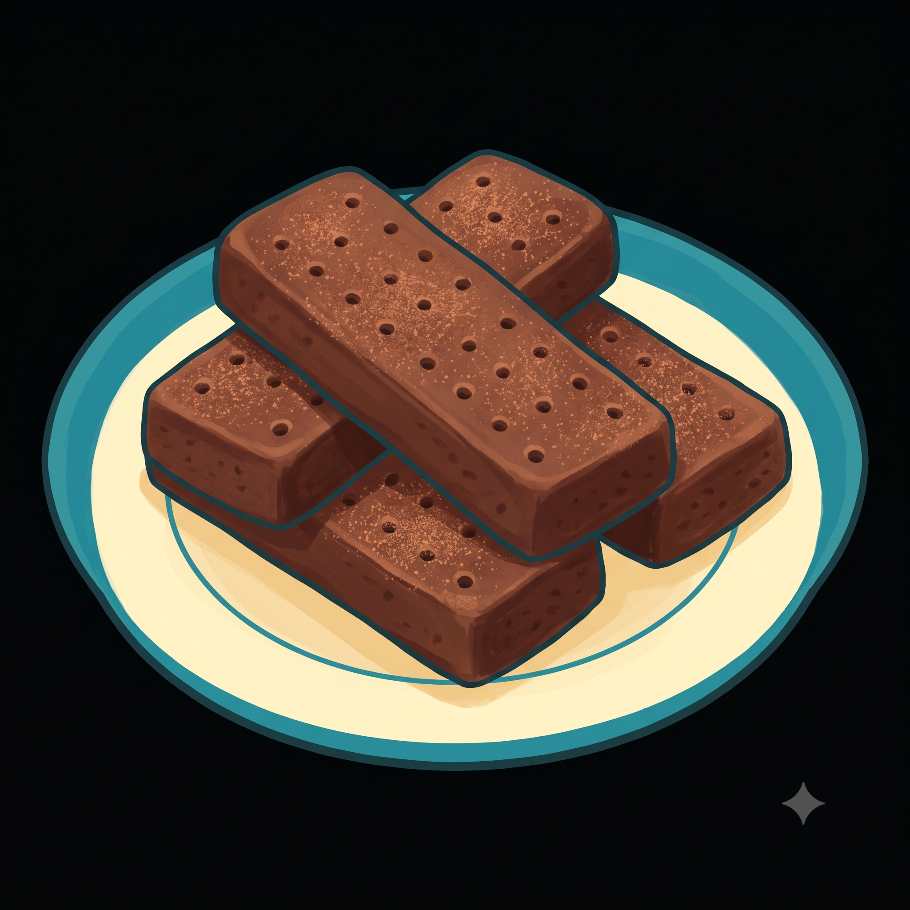
Hand-illustrated storybook game art, warm and playful pirate-nautical theme. Soft rounded shapes, gentle dark-teal outlines, hand-painted texture, cheerful saturated palette (sea teal #1d96a6, warm parchment #fff6c0, gold #f5a623, coral pink #f2679e, mint #27c78d, deep ink #1f4249). Friendly, kid-appropriate, slightly chunky proportions like a mobile board game. Even soft lighting from top-left, subtle painterly shading, no harsh photorealism. Centered subject, on a solid flat near-black background (hex #000001, no gradient, no shadow, no vignette), no text or lettering anywhere in the image. A single finished Spiced Cocoa Shortbread: rectangular shortbread finger/bar cookies (NOT round), like classic Scottish shortbread fingers, each bar with two neat rows of small round docking holes pricked along its length in a grid pattern, straight clean rectangular edges, dark rich cocoa-brown color, a light cinnamon dusting, two or three bars stacked and overlapping, appetizing storybook illustration, on a simple plate, 1:1 square, centered, on a solid flat near-black (#000001) background, no text.
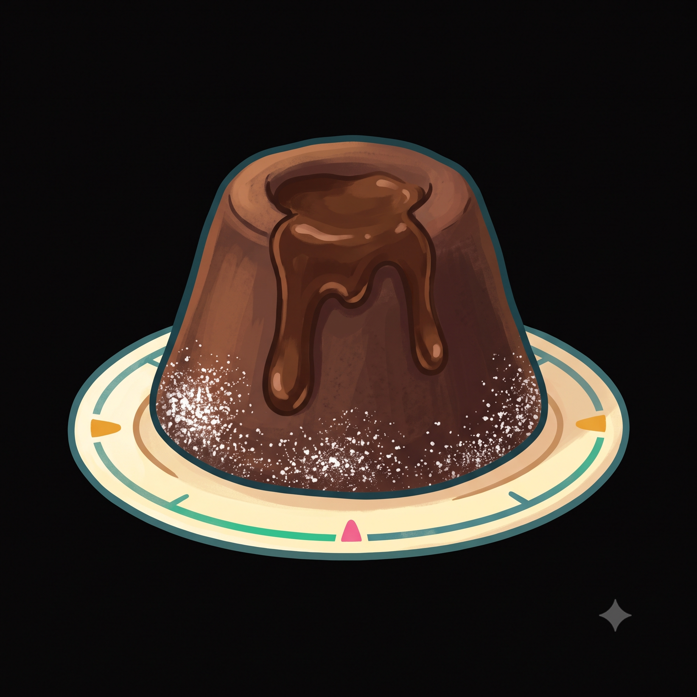
Hand-illustrated storybook game art, warm and playful pirate-nautical theme. Soft rounded shapes, gentle dark-teal outlines, hand-painted texture, cheerful saturated palette (sea teal #1d96a6, warm parchment #fff6c0, gold #f5a623, coral pink #f2679e, mint #27c78d, deep ink #1f4249). Friendly, kid-appropriate, slightly chunky proportions like a mobile board game. Even soft lighting from top-left, subtle painterly shading, no harsh photorealism. Centered subject, on a solid flat near-black background (hex #000001, no gradient, no shadow, no vignette), no text or lettering anywhere in the image. A single finished Molten Chocolate Lava Cake, shaped like a cute little volcano: a small dark chocolate cake with a cone-like mound shape and a crater dip on top, thick liquid fudge lava oozing and flowing down the outside like lava down a volcano, dusted with powdered sugar 'snow' near the base, playful and cute, appetizing storybook illustration, on a simple plate, 1:1 square, centered, on a solid flat near-black (#000001) background, no text.
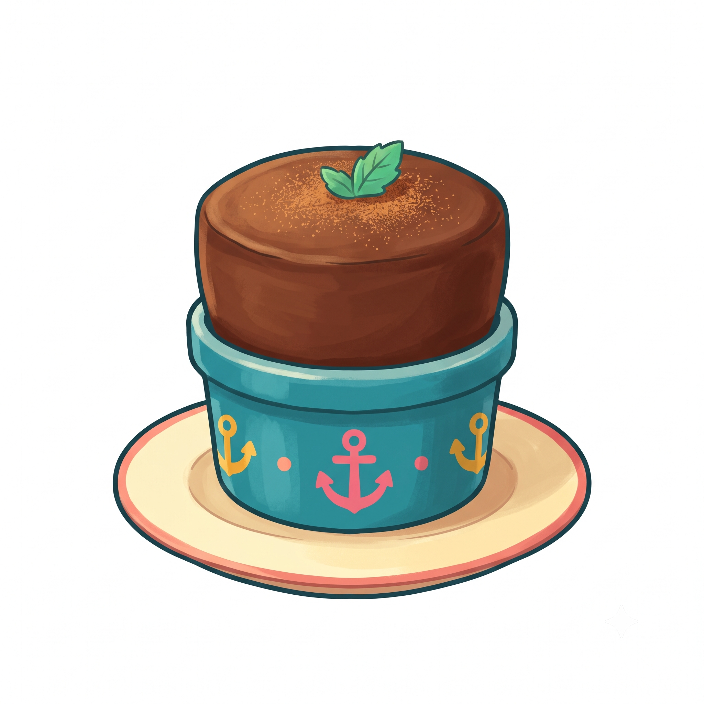
Hand-illustrated storybook game art, warm and playful pirate-nautical theme. Soft rounded shapes, gentle dark-teal outlines, hand-painted texture, cheerful saturated palette (sea teal #1d96a6, warm parchment #fff6c0, gold #f5a623, coral pink #f2679e, mint #27c78d, deep ink #1f4249). Friendly, kid-appropriate, slightly chunky proportions like a mobile board game. Even soft lighting from top-left, subtle painterly shading, no harsh photorealism. Centered subject, on a solid flat near-black background (hex #000001, no gradient, no shadow, no vignette), no text or lettering anywhere in the image. A single finished Mayan Cocoa Soufflé: a tall proudly risen dark-chocolate soufflé standing straight up well above the rim of its ramekin, NOT collapsed or sunken, smooth luscious rich dark chocolate-brown color throughout, a light cinnamon dust accent on top, garnished with a small fresh mint leaf, appetizing storybook illustration, on a simple plate, 1:1 square, centered, on a solid flat near-black (#000001) background, no text.
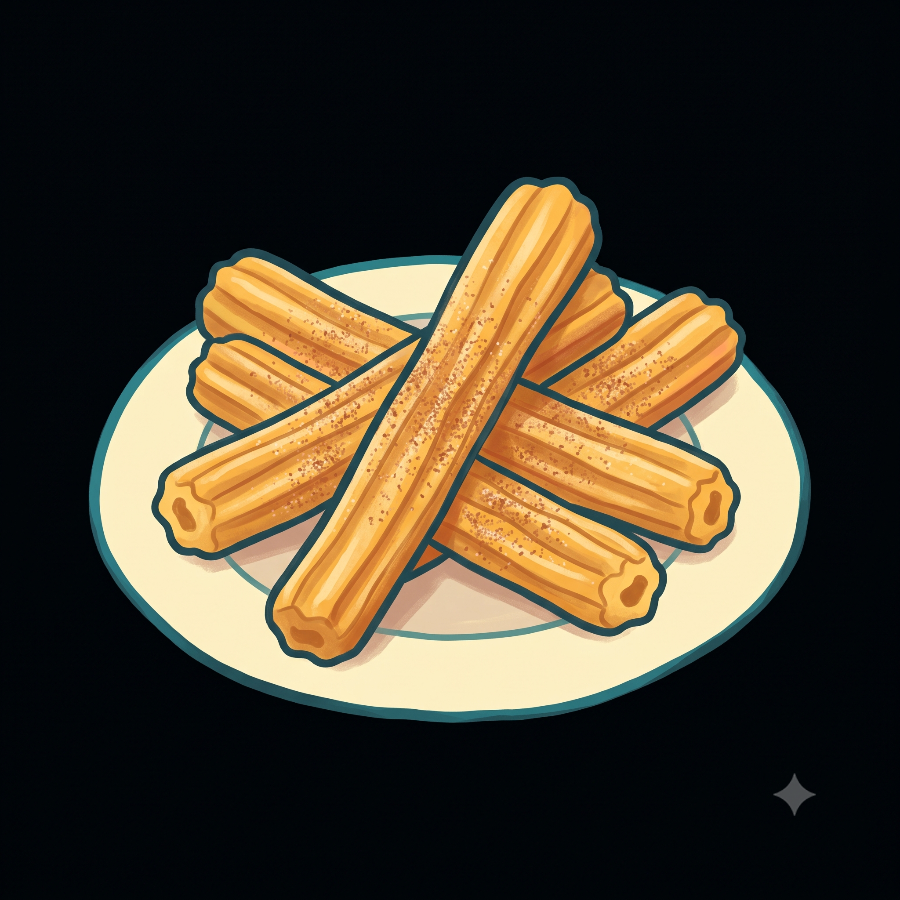
Hand-illustrated storybook game art, warm and playful pirate-nautical theme. Soft rounded shapes, gentle dark-teal outlines, hand-painted texture, cheerful saturated palette (sea teal #1d96a6, warm parchment #fff6c0, gold #f5a623, coral pink #f2679e, mint #27c78d, deep ink #1f4249). Friendly, kid-appropriate, slightly chunky proportions like a mobile board game. Even soft lighting from top-left, subtle painterly shading, no harsh photorealism. Centered subject, on a solid flat near-black background (hex #000001, no gradient, no shadow, no vignette), no text or lettering anywhere in the image. A single finished Cinnamon-Sugar Churros: golden ridged churro sticks tossed in cinnamon-sugar, crossed on a plate, appetizing storybook illustration, on a simple plate, 1:1 square, centered, on a solid flat near-black (#000001) background, no text.
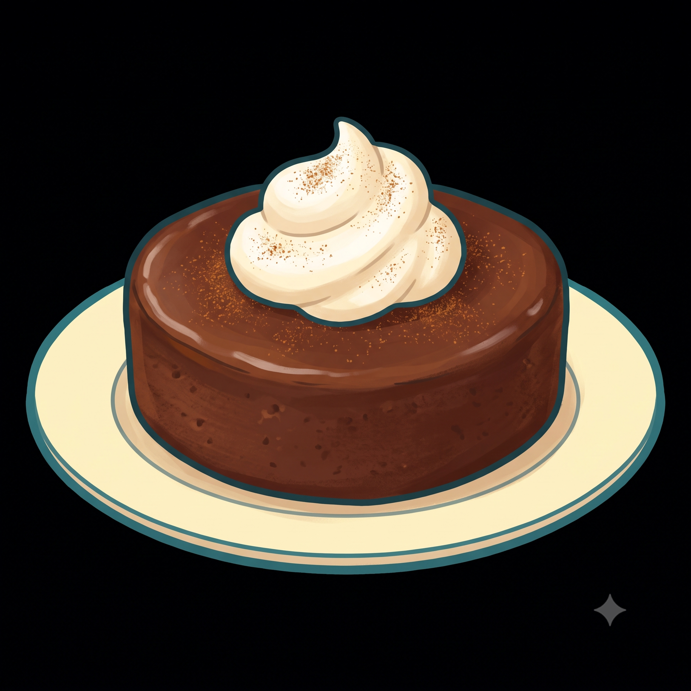
Hand-illustrated storybook game art, warm and playful pirate-nautical theme. Soft rounded shapes, gentle dark-teal outlines, hand-painted texture, cheerful saturated palette (sea teal #1d96a6, warm parchment #fff6c0, gold #f5a623, coral pink #f2679e, mint #27c78d, deep ink #1f4249). Friendly, kid-appropriate, slightly chunky proportions like a mobile board game. Even soft lighting from top-left, subtle painterly shading, no harsh photorealism. Centered subject, on a solid flat near-black background (hex #000001, no gradient, no shadow, no vignette), no text or lettering anywhere in the image. A single finished Mexican Chocolate Torte: a dense fudgy round chocolate cake slice, glossy, with cinnamon dust, topped with a generous swirled dollop of whipped cream, appetizing storybook illustration, on a simple plate, 1:1 square, centered, on a solid flat near-black (#000001) background, no text.
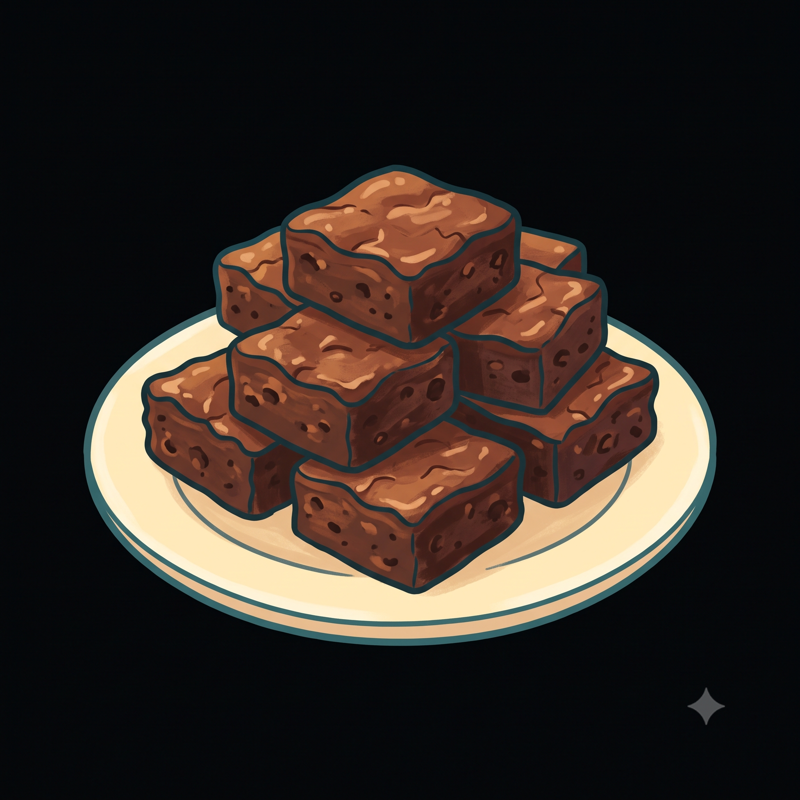
Hand-illustrated storybook game art, warm and playful pirate-nautical theme. Soft rounded shapes, gentle dark-teal outlines, hand-painted texture, cheerful saturated palette (sea teal #1d96a6, warm parchment #fff6c0, gold #f5a623, coral pink #f2679e, mint #27c78d, deep ink #1f4249). Friendly, kid-appropriate, slightly chunky proportions like a mobile board game. Even soft lighting from top-left, subtle painterly shading, no harsh photorealism. Centered subject, on a solid flat near-black background (hex #000001, no gradient, no shadow, no vignette), no text or lettering anywhere in the image. A single finished Spiced Fudge Brownies: dark brownies with a shiny crackly crust, stacked squares, appetizing storybook illustration, on a simple plate, 1:1 square, centered, on a solid flat near-black (#000001) background, no text.
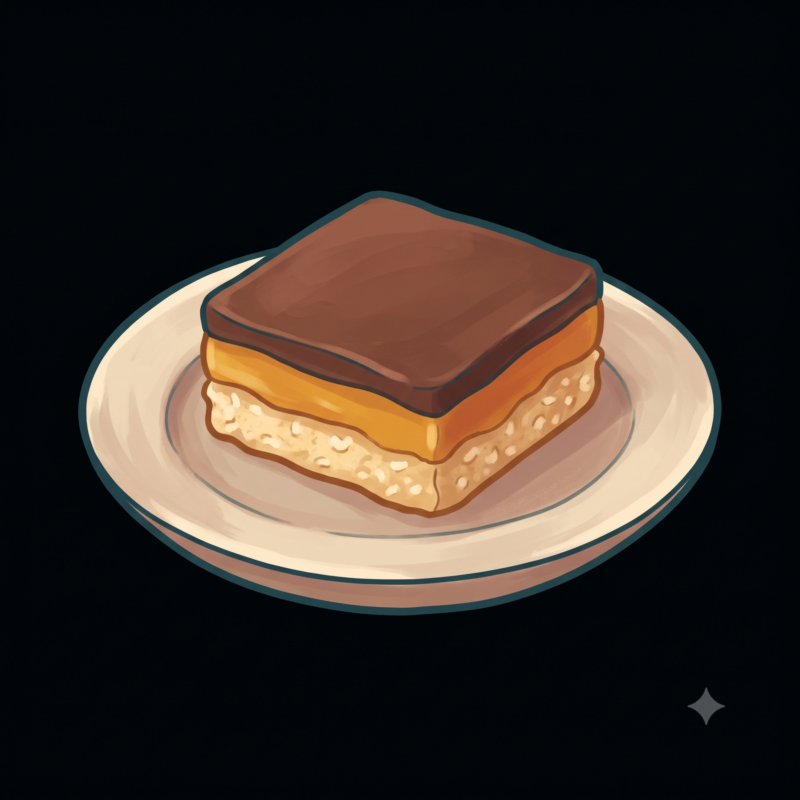
Hand-illustrated storybook game art, warm and playful pirate-nautical theme. Soft rounded shapes, gentle dark-teal outlines, hand-painted texture, cheerful saturated palette (sea teal #1d96a6, warm parchment #fff6c0, gold #f5a623, coral pink #f2679e, mint #27c78d, deep ink #1f4249). Friendly, kid-appropriate, slightly chunky proportions like a mobile board game. Even soft lighting from top-left, subtle painterly shading, no harsh photorealism. Centered subject, on a solid flat near-black background (hex #000001, no gradient, no shadow, no vignette), no text or lettering anywhere in the image. A single finished Caramel Slice: a three-layer bar with a coconut shortbread base, chewy caramel middle, and chocolate top, one square shown with the side visible, appetizing storybook illustration, on a simple plate, 1:1 square, centered, on a solid flat near-black (#000001) background, no text.
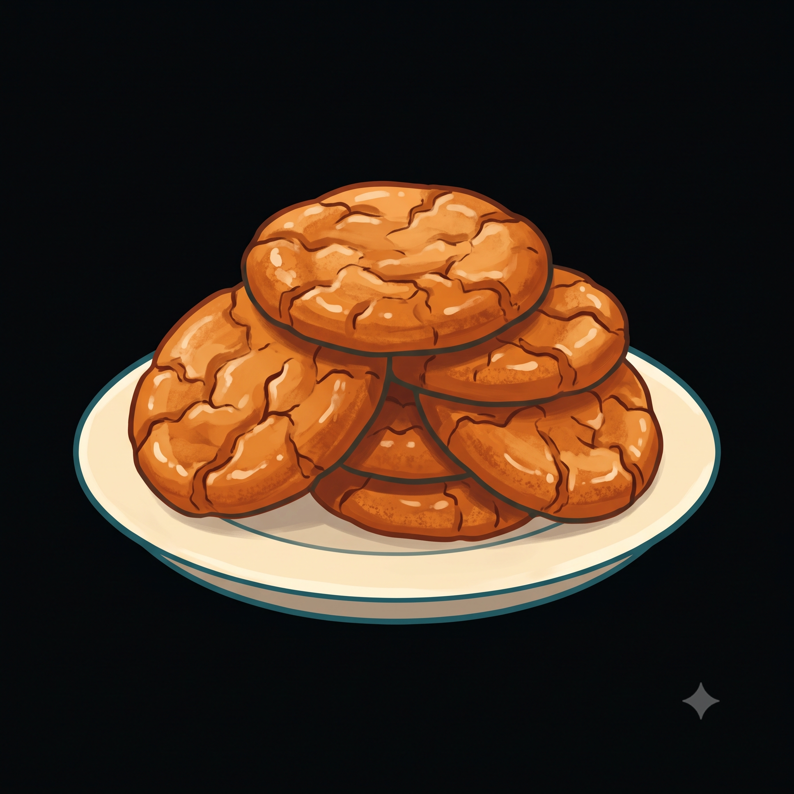
Hand-illustrated storybook game art, warm and playful pirate-nautical theme. Soft rounded shapes, gentle dark-teal outlines, hand-painted texture, cheerful saturated palette (sea teal #1d96a6, warm parchment #fff6c0, gold #f5a623, coral pink #f2679e, mint #27c78d, deep ink #1f4249). Friendly, kid-appropriate, slightly chunky proportions like a mobile board game. Even soft lighting from top-left, subtle painterly shading, no harsh photorealism. Centered subject, on a solid flat near-black background (hex #000001, no gradient, no shadow, no vignette), no text or lettering anywhere in the image. A single finished Cinnamon Snaps: a small PILE of several crisp flat round cookies (not just one or two, a proper stacked pile of five or six), warm deep orange-brown color, glossy sheen, heavily crinkled and crackled tops like classic crinkle cookies, shown on a plate from the SAME gentle front 3/4 angle view as a normal dessert photo (looking slightly down and across at the pile from the front-left, NOT a flat top-down overhead shot), appetizing storybook illustration, on a simple plate, 1:1 square, centered, on a solid flat near-black (#000001) background, no text.
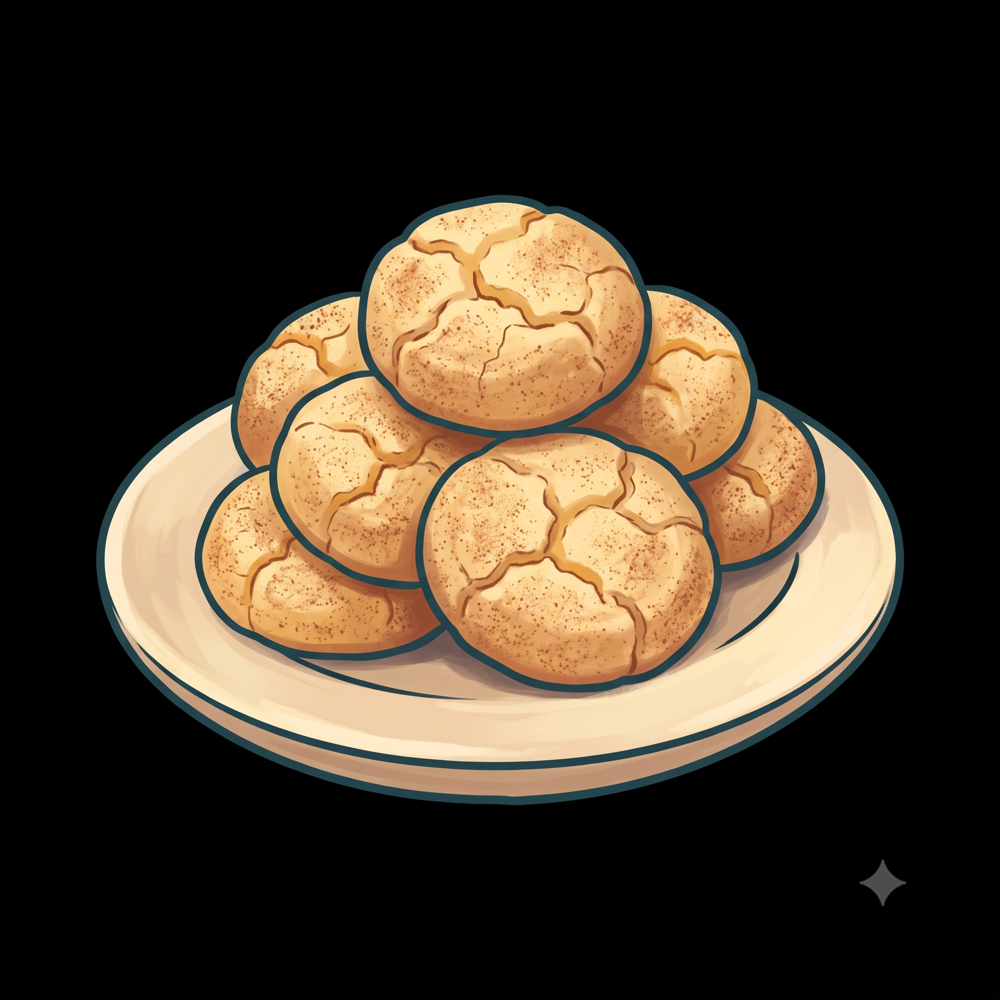
Hand-illustrated storybook game art, warm and playful pirate-nautical theme. Soft rounded shapes, gentle dark-teal outlines, hand-painted texture, cheerful saturated palette (sea teal #1d96a6, warm parchment #fff6c0, gold #f5a623, coral pink #f2679e, mint #27c78d, deep ink #1f4249). Friendly, kid-appropriate, slightly chunky proportions like a mobile board game. Even soft lighting from top-left, subtle painterly shading, no harsh photorealism. Centered subject, on a solid flat near-black background (hex #000001, no gradient, no shadow, no vignette), no text or lettering anywhere in the image. A single finished Snickerdoodle Bites: pillowy soft round cookies rolled in cinnamon-sugar with crackled tops, a small pile, appetizing storybook illustration, on a simple plate, 1:1 square, centered, on a solid flat near-black (#000001) background, no text.
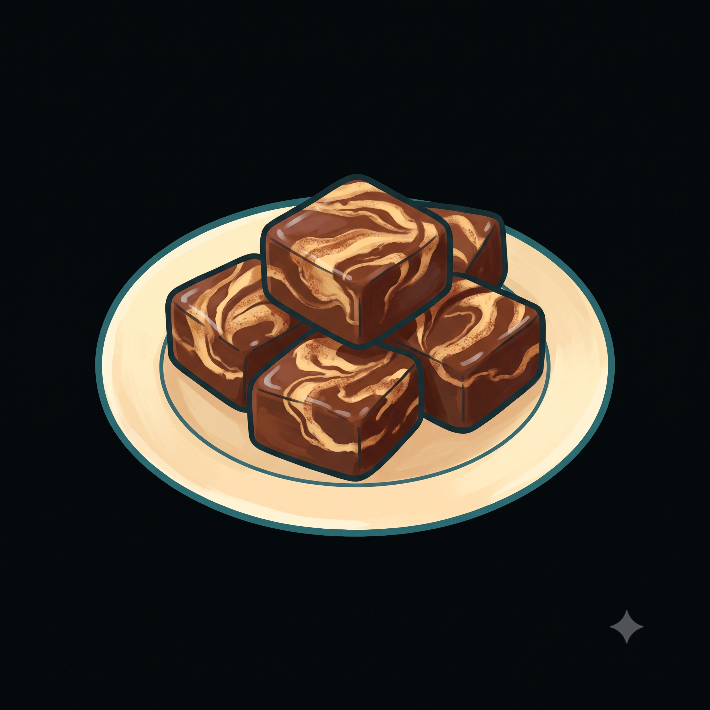
Hand-illustrated storybook game art, warm and playful pirate-nautical theme. Soft rounded shapes, gentle dark-teal outlines, hand-painted texture, cheerful saturated palette (sea teal #1d96a6, warm parchment #fff6c0, gold #f5a623, coral pink #f2679e, mint #27c78d, deep ink #1f4249). Friendly, kid-appropriate, slightly chunky proportions like a mobile board game. Even soft lighting from top-left, subtle painterly shading, no harsh photorealism. Centered subject, on a solid flat near-black background (hex #000001, no gradient, no shadow, no vignette), no text or lettering anywhere in the image. A single finished Cinnamon-Chocolate Fudge: glossy chocolate fudge squares with a marbled cinnamon-vanilla swirl, appetizing storybook illustration, on a simple plate, 1:1 square, centered, on a solid flat near-black (#000001) background, no text.
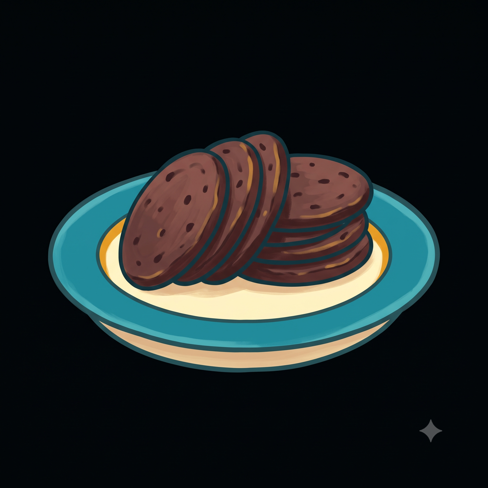
Hand-illustrated storybook game art, warm and playful pirate-nautical theme. Soft rounded shapes, gentle dark-teal outlines, hand-painted texture, cheerful saturated palette (sea teal #1d96a6, warm parchment #fff6c0, gold #f5a623, coral pink #f2679e, mint #27c78d, deep ink #1f4249). Friendly, kid-appropriate, slightly chunky proportions like a mobile board game. Even soft lighting from top-left, subtle painterly shading, no harsh photorealism. Centered subject, on a solid flat near-black background (hex #000001, no gradient, no shadow, no vignette), no text or lettering anywhere in the image. A single finished Crispy Cocoa Snaps: thin dark snappy cocoa cookies, a couple leaning in a stack, appetizing storybook illustration, on a simple plate, 1:1 square, centered, on a solid flat near-black (#000001) background, no text.
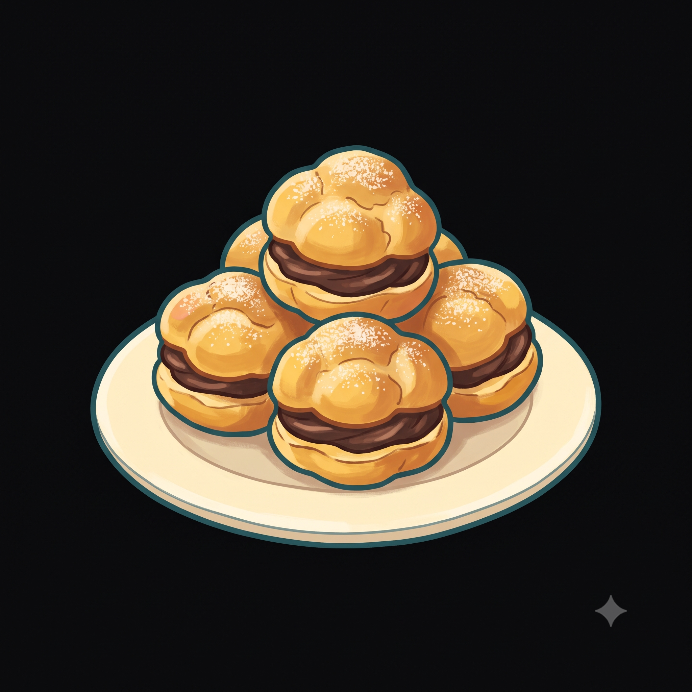
Hand-illustrated storybook game art, warm and playful pirate-nautical theme. Soft rounded shapes, gentle dark-teal outlines, hand-painted texture, cheerful saturated palette (sea teal #1d96a6, warm parchment #fff6c0, gold #f5a623, coral pink #f2679e, mint #27c78d, deep ink #1f4249). Friendly, kid-appropriate, slightly chunky proportions like a mobile board game. Even soft lighting from top-left, subtle painterly shading, no harsh photorealism. Centered subject, on a solid flat near-black background (hex #000001, no gradient, no shadow, no vignette), no text or lettering anywhere in the image. A single finished Dark Chocolate Cream Puffs: golden choux puffs filled with dark cream, lightly dusted, a small pile, appetizing storybook illustration, on a simple plate, 1:1 square, centered, on a solid flat near-black (#000001) background, no text.
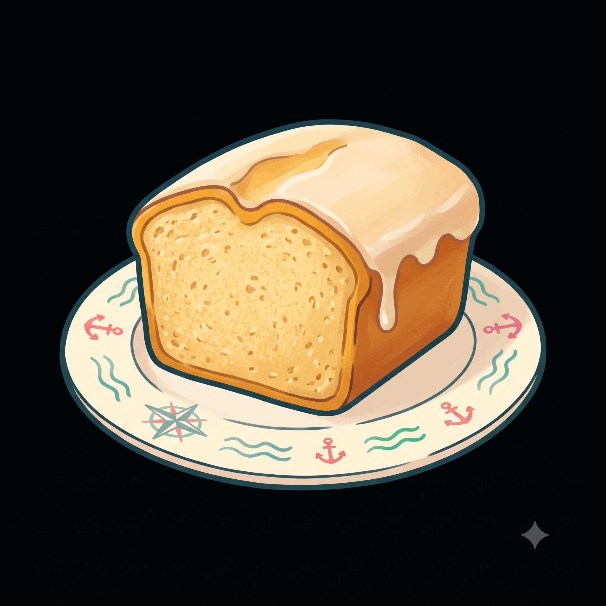
Hand-illustrated storybook game art, warm and playful pirate-nautical theme. Soft rounded shapes, gentle dark-teal outlines, hand-painted texture, cheerful saturated palette (sea teal #1d96a6, warm parchment #fff6c0, gold #f5a623, coral pink #f2679e, mint #27c78d, deep ink #1f4249). Friendly, kid-appropriate, slightly chunky proportions like a mobile board game. Even soft lighting from top-left, subtle painterly shading, no harsh photorealism. Centered subject, on a solid flat near-black background (hex #000001, no gradient, no shadow, no vignette), no text or lettering anywhere in the image. A single finished Pound Cake: a dense golden loaf slice with a fine crumb and a thin vanilla-milk glaze drip, appetizing storybook illustration, on a simple plate, 1:1 square, centered, on a solid flat near-black (#000001) background, no text.
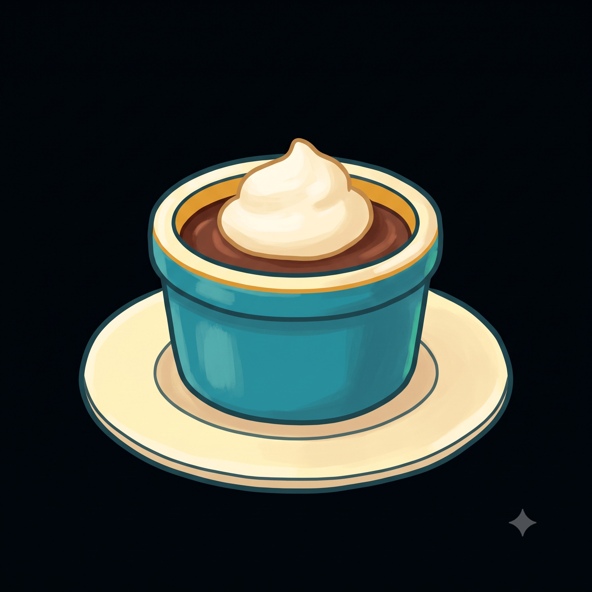
Hand-illustrated storybook game art, warm and playful pirate-nautical theme. Soft rounded shapes, gentle dark-teal outlines, hand-painted texture, cheerful saturated palette (sea teal #1d96a6, warm parchment #fff6c0, gold #f5a623, coral pink #f2679e, mint #27c78d, deep ink #1f4249). Friendly, kid-appropriate, slightly chunky proportions like a mobile board game. Even soft lighting from top-left, subtle painterly shading, no harsh photorealism. Centered subject, on a solid flat near-black background (hex #000001, no gradient, no shadow, no vignette), no text or lettering anywhere in the image. A single finished French Pots de Crème: a small ramekin of spoonable dark chocolate custard with a dollop of cream, appetizing storybook illustration, on a simple plate, 1:1 square, centered, on a solid flat near-black (#000001) background, no text.
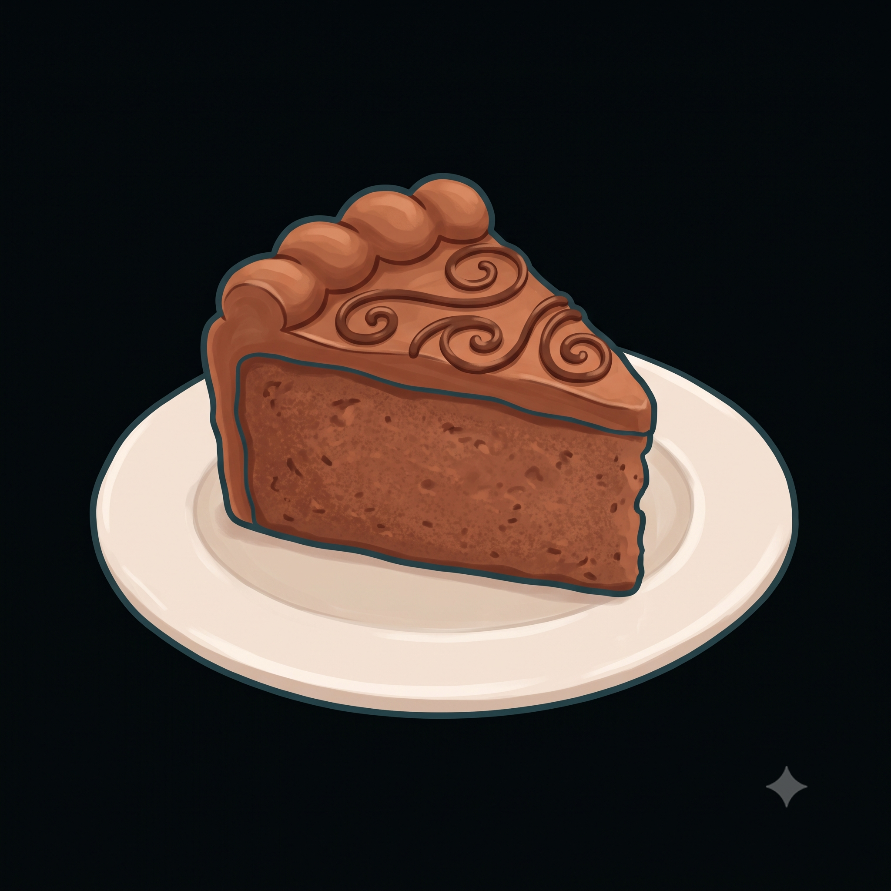
Hand-illustrated storybook game art, warm and playful pirate-nautical theme. Soft rounded shapes, gentle dark-teal outlines, hand-painted texture, cheerful saturated palette (sea teal #1d96a6, warm parchment #fff6c0, gold #f5a623, coral pink #f2679e, mint #27c78d, deep ink #1f4249). Friendly, kid-appropriate, slightly chunky proportions like a mobile board game. Even soft lighting from top-left, subtle painterly shading, no harsh photorealism. Centered subject, on a solid flat near-black background (hex #000001, no gradient, no shadow, no vignette), no text or lettering anywhere in the image. A single finished Chocolate Genoise Sponge Cake: a light airy round chocolate sponge slice, delicate, topped with a fun swirled chocolate ganache frosting (chocolate-brown colored, NOT teal), decorative chocolate swirl piping on top, appetizing storybook illustration, on a simple plate, 1:1 square, centered, on a solid flat near-black (#000001) background, no text.
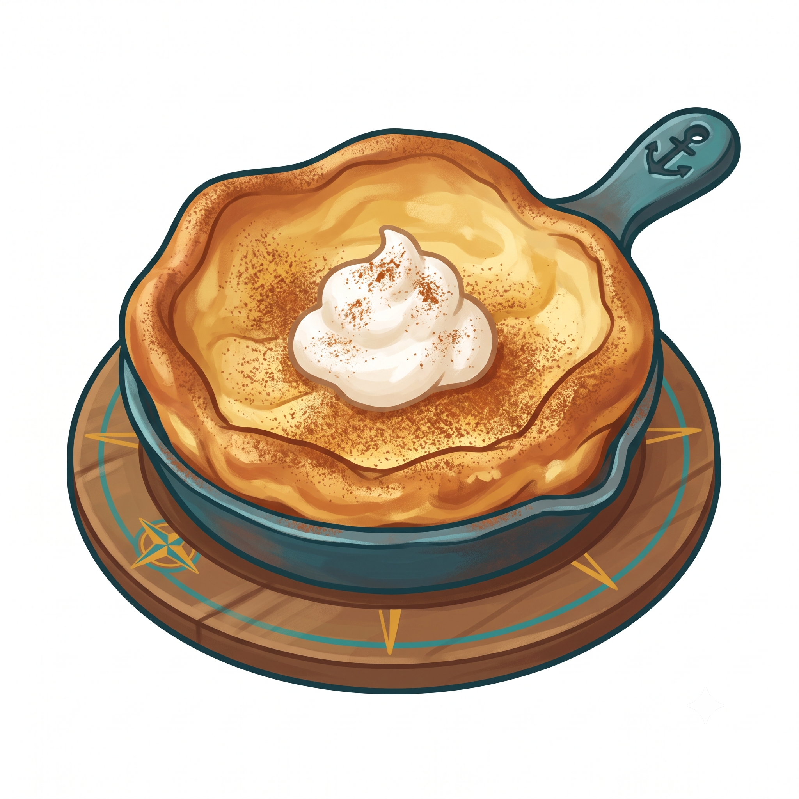
Hand-illustrated storybook game art, warm and playful pirate-nautical theme. Soft rounded shapes, gentle dark-teal outlines, hand-painted texture, cheerful saturated palette (sea teal #1d96a6, warm parchment #fff6c0, gold #f5a623, coral pink #f2679e, mint #27c78d, deep ink #1f4249). Friendly, kid-appropriate, slightly chunky proportions like a mobile board game. Even soft lighting from top-left, subtle painterly shading, no harsh photorealism. Centered subject, on a solid flat near-black background (hex #000001, no gradient, no shadow, no vignette), no text or lettering anywhere in the image. A single finished Cinnamon Dutch Baby: a puffed skillet pancake with dramatic risen edges, a custardy center, heavily and visibly dusted with cinnamon so the cinnamon is bold and noticeable, topped with a generous dollop of whipped cream right in the middle, appetizing storybook illustration, on a simple plate, 1:1 square, centered, on a solid flat near-black (#000001) background, no text.
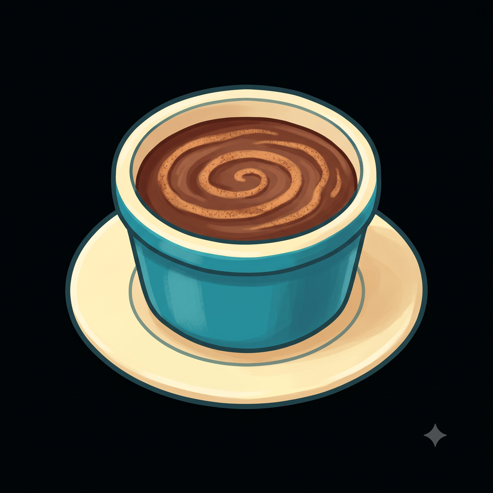
Hand-illustrated storybook game art, warm and playful pirate-nautical theme. Soft rounded shapes, gentle dark-teal outlines, hand-painted texture, cheerful saturated palette (sea teal #1d96a6, warm parchment #fff6c0, gold #f5a623, coral pink #f2679e, mint #27c78d, deep ink #1f4249). Friendly, kid-appropriate, slightly chunky proportions like a mobile board game. Even soft lighting from top-left, subtle painterly shading, no harsh photorealism. Centered subject, on a solid flat near-black background (hex #000001, no gradient, no shadow, no vignette), no text or lettering anywhere in the image. A single finished Mexican Chocolate Pots: a silky dark chocolate custard in a small round cup or ramekin with NO handle at all (a plain handleless cup, not a mug or teacup), vanilla-cinnamon flavor, the smooth surface swirled with a decorative cinnamon pattern (no whipped cream, no cream topping at all), appetizing storybook illustration, on a simple plate, 1:1 square, centered, on a solid flat near-black (#000001) background, no text.
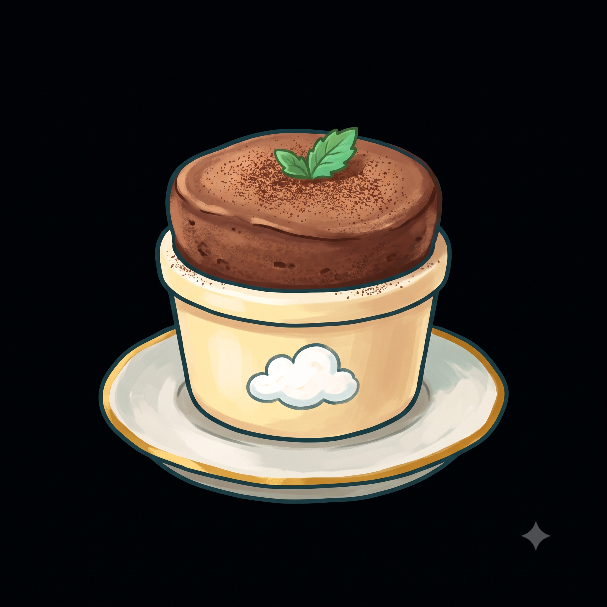
Hand-illustrated storybook game art, warm and playful pirate-nautical theme. Soft rounded shapes, gentle dark-teal outlines, hand-painted texture, cheerful saturated palette (sea teal #1d96a6, warm parchment #fff6c0, gold #f5a623, coral pink #f2679e, mint #27c78d, deep ink #1f4249). Friendly, kid-appropriate, slightly chunky proportions like a mobile board game. Even soft lighting from top-left, subtle painterly shading, no harsh photorealism. Centered subject, on a solid flat near-black background (hex #000001, no gradient, no shadow, no vignette), no text or lettering anywhere in the image. A single finished Cocoa Cloud Soufflé: an airy whipped dark-chocolate soufflé, light and risen over a ramekin, garnished with a small fresh mint leaf and a light dusting of cocoa powder on top. The ramekin itself has a cute painted white fluffy cloud illustration decorating its front side, appetizing storybook illustration, on a simple plate, 1:1 square, centered, on a solid flat near-black (#000001) background, no text.
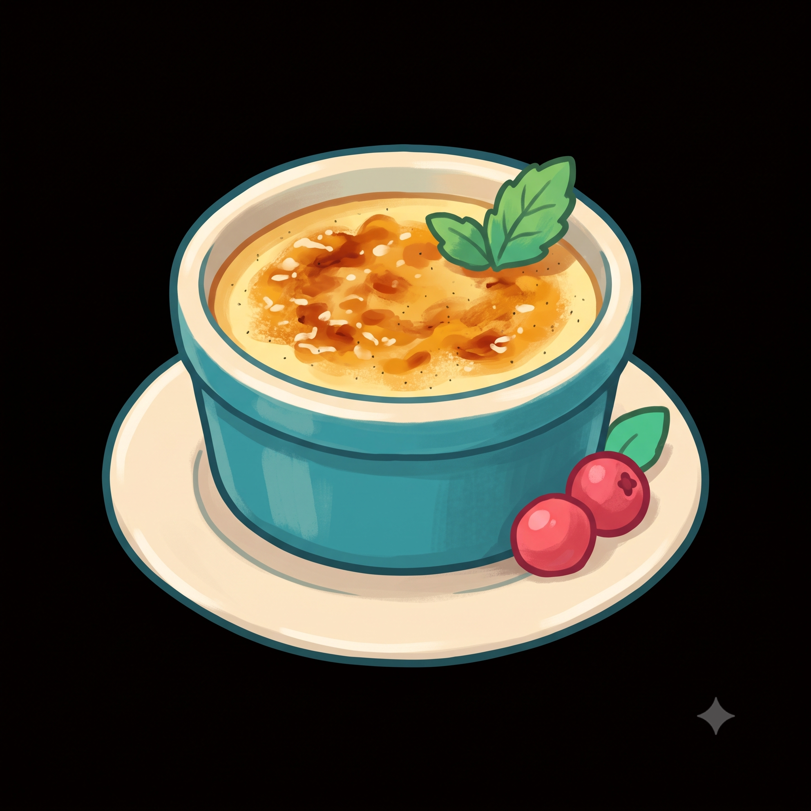
Hand-illustrated storybook game art, warm and playful pirate-nautical theme. Soft rounded shapes, gentle dark-teal outlines, hand-painted texture, cheerful saturated palette (sea teal #1d96a6, warm parchment #fff6c0, gold #f5a623, coral pink #f2679e, mint #27c78d, deep ink #1f4249). Friendly, kid-appropriate, slightly chunky proportions like a mobile board game. Even soft lighting from top-left, subtle painterly shading, no harsh photorealism. Centered subject, on a solid flat near-black background (hex #000001, no gradient, no shadow, no vignette), no text or lettering anywhere in the image. A single finished Vanilla Bean Crème Brûlée: a ramekin of custard with a glassy blowtorched caramelized sugar top and visible vanilla-bean flecks, garnished with a small fresh mint leaf and a couple of fresh red berries on the side, appetizing storybook illustration, on a simple plate, 1:1 square, centered, on a solid flat near-black (#000001) background, no text.
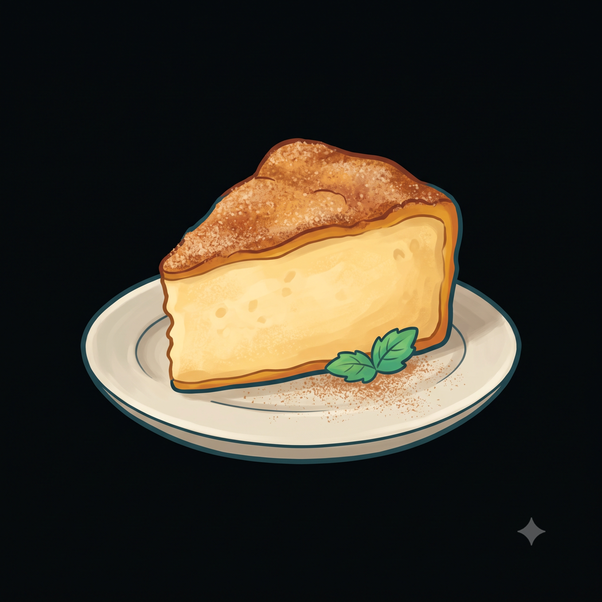
Hand-illustrated storybook game art, warm and playful pirate-nautical theme. Soft rounded shapes, gentle dark-teal outlines, hand-painted texture, cheerful saturated palette (sea teal #1d96a6, warm parchment #fff6c0, gold #f5a623, coral pink #f2679e, mint #27c78d, deep ink #1f4249). Friendly, kid-appropriate, slightly chunky proportions like a mobile board game. Even soft lighting from top-left, subtle painterly shading, no harsh photorealism. Centered subject, on a solid flat near-black background (hex #000001, no gradient, no shadow, no vignette), no text or lettering anywhere in the image. A single finished Cinnamon Sponge Cake: a fluffy golden cake slice with a crisp cinnamon-sugar crust, garnished with a small fresh mint leaf and a light dusting of cinnamon on the plate, appetizing storybook illustration, on a simple plate, 1:1 square, centered, on a solid flat near-black (#000001) background, no text.
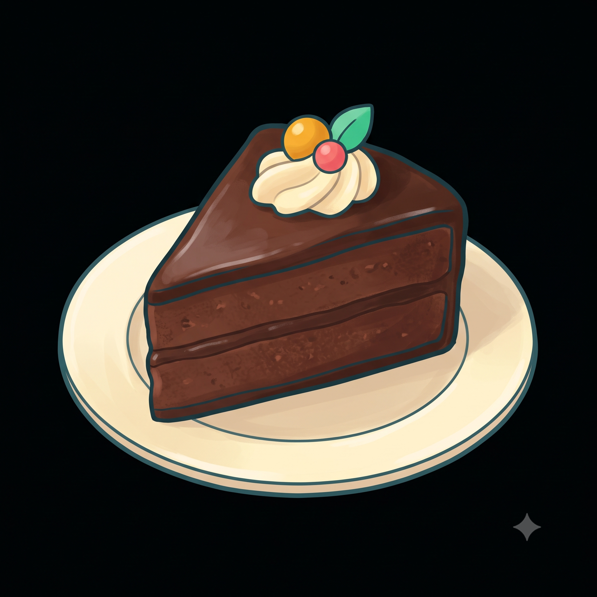
Hand-illustrated storybook game art, warm and playful pirate-nautical theme. Soft rounded shapes, gentle dark-teal outlines, hand-painted texture, cheerful saturated palette (sea teal #1d96a6, warm parchment #fff6c0, gold #f5a623, coral pink #f2679e, mint #27c78d, deep ink #1f4249). Friendly, kid-appropriate, slightly chunky proportions like a mobile board game. Even soft lighting from top-left, subtle painterly shading, no harsh photorealism. Centered subject, on a solid flat near-black background (hex #000001, no gradient, no shadow, no vignette), no text or lettering anywhere in the image. A single finished Chocolate Fudge Torte: a premium dense velvety chocolate cake slice with a glossy ganache sheen, appetizing storybook illustration, on a simple plate, 1:1 square, centered, on a solid flat near-black (#000001) background, no text.